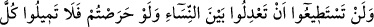
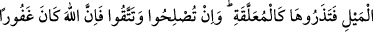
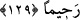

sabredenlere ve şükredenlere cenneti va’detmiştir.” diye cevap verdi.
Sa’dî (k.s.) şöyle demiştir:
Güzel yüzlü bir kadın iffetli olursa eğer
Onun hürmetine kocası cennete girer
Hem zahit hem de güzel sözlü olursa
Onun iyiliğine kötülüğüne bakma
129- Üzerine düşüp uğraşsanız da kadınlar arasında âdil davranmaya güç
yetiremezsiniz; bâri birisine tamâmen kapılıp da diğerini askıya alınmış gibi
bırakmayın. Eğer arayı düzeltir, günahtan sakınırsanız Allah şüphesiz çok
bağışlayıcı ve esirgeyicidir.
“Üzerine düşüp uğraşsanız da kadınlar arasında âdil davranmaya güç
yetiremezsiniz.” Yâni, herhangi bir işte onlardan birine meyletmeden aralarında
adâletli davranabilmeniz ve eşitliği sağlamanız imkansızdır. Bundan dolayı Rasûlullah
(s.a.v.) de günlerini hanımları arasında taksim eder adâletli davranır ve şöyle
buyururdu: “Allah’ım, bu benim yapabildiğim taksîmimdir. Senin gücün dâhilinde
olup da benim güç yetiremediğim şeyden beni hesaba çekme.”[173] Bununla sevgideki
taksîmi kastetmiştir. Rasûlullah (s.a.v)’in Hz. Âişe (r.anhâ.)’ya aşırı bir muhabbeti
vardı.
“Bâri birisine tamâmen kapılıp da.” yâni rağbet etmediğiniz hanımınızdan tamâmen
yüz çevirip de “diğerini askıya alınmış gibi” kocasızmış gibi “bırakmayın.” Elinizden
geldiği kadar adâletli davranın. Tam olarak adâleti uygulamaktan âciz kalmanız, ancak
buna güç yetiremediğiniz zaman geçerlidir. Yoksa sizin kudretinizde olan hususlarda bu
geçerli değildir. Çünkü tamamı elde edilemeyen bir şeyin hepsi terkedilmez. Bir
hadiste: “Doğru olun, fakat tam olarak doğru olmaya gücünüz yetmez.”[174]
buyurulmuştur. Yâni, her konuda istikâmet üzere olmaya güç yetiremez, mutlaka bir
tarafa meyledersiniz.
“Askıya alınmış gibi bırakmayın” ifâdesindeki kadın, dul değildir ki evlensin, kocası
olan bir kadın da değildir ki onunla güzel geçinsin. O kadının durumu bir yere
asıldığından ne yerde ne gökte olan bir şeye benzer.
Bir hadiste Peygamberimiz (s.a.v.) şöyle buyurmuştur: “Kimin iki hanımı olur da
onlardan birine meylederse, kıyâmet günü bir tarafı eğilmiş olarak gelir.”[175]